Binomial Distribution Word Problems
1A coin is tossed four times. Calculate the probability of obtaining more heads than tails.
2An agent sells life insurance policies to five equally aged, healthy people. According to recent data, the probability of a person living in these conditions for 30 years or more is 2/3. Calculate the probability that after 30 years:
1. All five people are still living.
2.At least three people are still living.
3.Exactly two people are still living.
3If from six to seven in the evening one telephone line in every five is engaged in a conversation: what is the probability that when 10 telephone numbers are chosen at random, only two are in use?
4The probability of a man hitting the target at a shooting range is 1/4. If he shoots 10 times, what is the probability that he hits the target exactly three times? What is the probability that he hits the target at least once?
5There are 10 red and 20 blue balls in a box. A ball is chosen at random and it is noted whether it is red. The process repeats, returning the ball 10 times. Calculate the expected value and the standard deviation of this game.
6It has been determined that 5% of drivers checked at a road stop show traces of alcohol and 10% of drivers checked do not wear seat belts. In addition, it has been observed that the two infractions are independent from one another. If an officer stops five drivers at random:
1. Calculate the probability that exactly three of the drivers have committed any one of the two offenses.
2. Calculate the probability that at least one of the drivers checked has committed at least one of the two offenses.
7A pharmaceutical lab states that a drug causes negative side effects in 3 of every 100 patients. To confirm this affirmation, another laboratory chooses 5 people at random who have consumed the drug. What is the probability of the following events?
1. None of the five patients experience side effects.
2.At least two experience side effects.
3.What is the average number of patients that the laboratory should expect to experience side effects if they choose 100 patients at random?
1
A coin is tossed four times. Calculate the probability of obtaining more heads than tails.
B(4, 0.5) p = 0.51 − p = 0.5
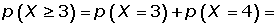
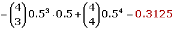
2
An agent sells life insurance policies to five equally aged, healthy people. According to recent data, the probability of a person living in these conditions for 30 years or more is 2/3. Calculate the probability that after 30 years:
1. All five people are still living.
B(5, 2/3) p = 2/3 1 − p = 1/3
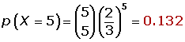
2.At least three people are still living.
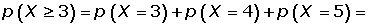
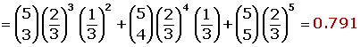
3.Exactly two people are still living.
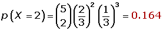
3
If from six to seven in the evening one telephone line in every five is engaged in a conversation: what is the probability that when 10 telephone numbers are chosen at random, only two are in use?
B(10, 1/5)p = 1/51 − p = 4/5

4
The probability of a man hitting the target at a shooting range is 1/4. If he shoots 10 times, what is the probability that he hits the target exactly three times? What is the probability that he hits the target at least once?
B(10, 1/4) p = 1/41 − p = 3/4
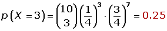
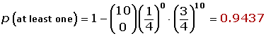
5
There are 10 red and 20 blue balls in a box. A ball is chosen at random and it is noted whether it is red. The process repeats, returning the ball 10 times. Calculate the expected value and the standard deviation of this game.
B(10, 1/3) p = 1/31 − p = 2/3
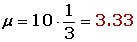
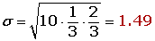
6
It has been determined that 5% of drivers checked at a road stop show traces of alcohol and 10% of drivers checked do not wear seat belts. In addition, it has been observed that the two infractions are independent from one another. If an officer stops five drivers at random:
1. Calculate the probability that exactly three of the drivers have committed any one of the two offenses.
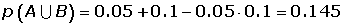
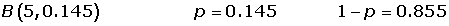
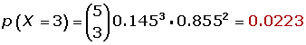
2. Calculate the probability that at least one of the drivers checked has committed at least one of the two offenses.
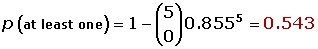
7
A pharmaceutical lab states that a drug causes negative side effects in 3 of every 100 patients. To confirm this affirmation, another laboratory chooses 5 people at random who have consumed the drug. What is the probability of the following events?
1. None of the five patients experience side effects.
B(100, 0.03) p = 0.03 q = 0.97
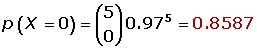
2.At least two experience side effects.

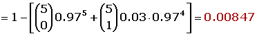
3.What is the average number of patients that the laboratory should expect to experience side effects if they choose 100 patients at random?
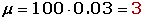